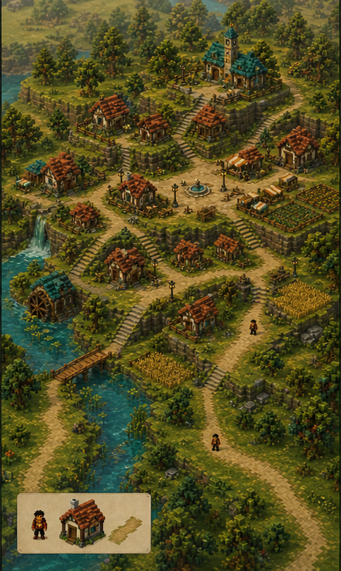
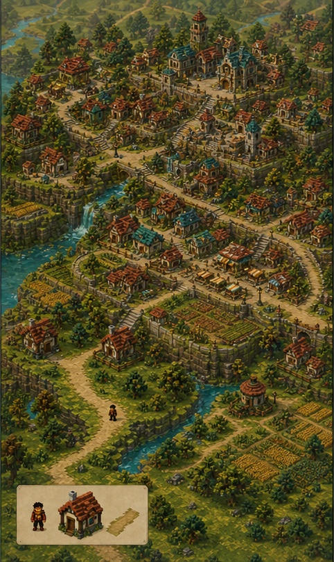
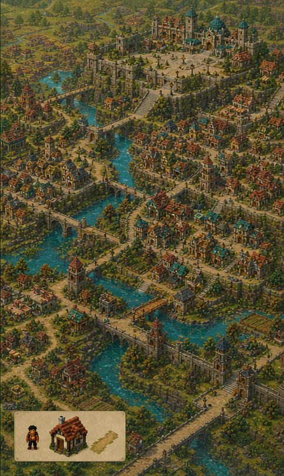
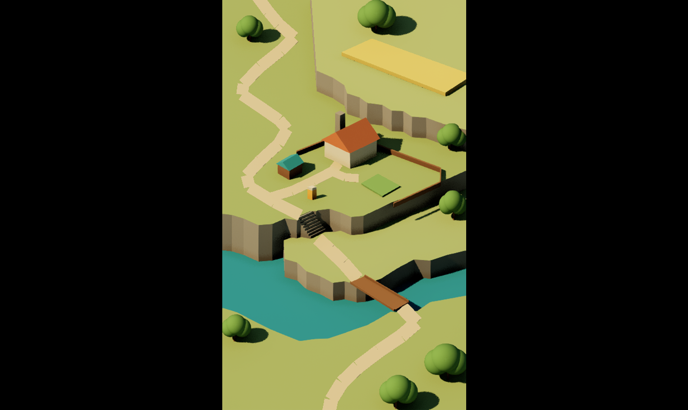
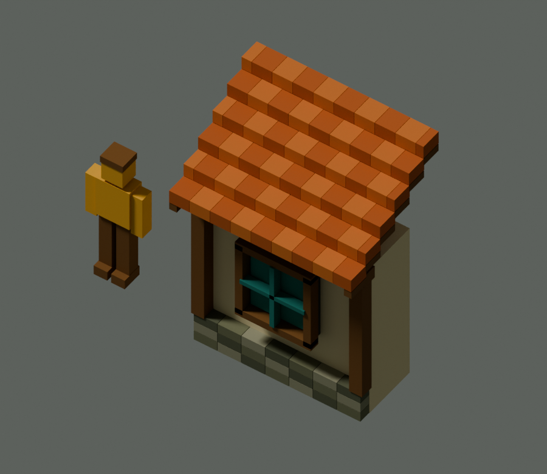
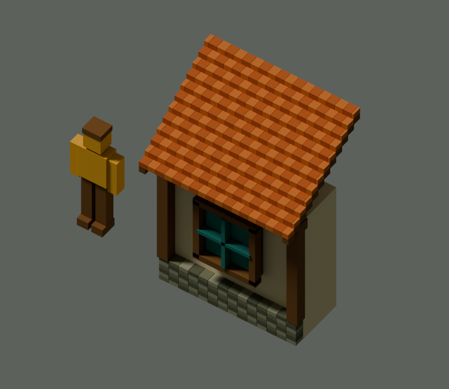
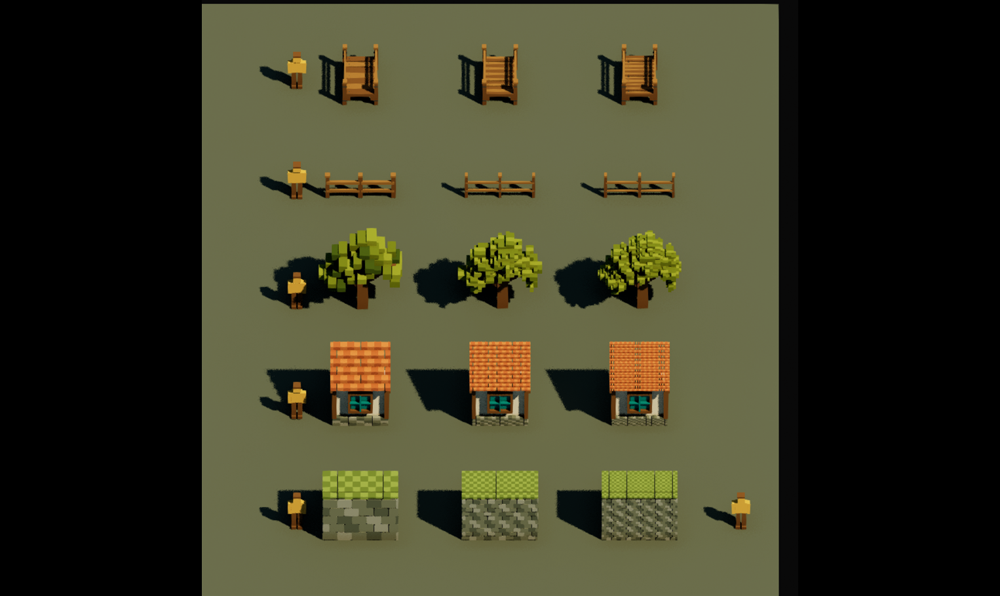

Establish the theme in a playable starting home. Check human-scale buildings, paths and crossings from several exploration views, with dimensions that can carry into larger settlements.




The homestead establishes the theme for an open-world video game. A full city will be one of many explorable settlements. Our immediate milestone is a detailed, coherent starting home that provides the art foundation for that larger world.
Terraced stone, winding rivers, warm plaster and timber, terracotta roofs, teal accents and dense vegetation carry through every scale. Expansion adds streets, districts and landmarks while keeping the world built around its inhabitants.



These references establish theme and scope. They do not yet specify an in-game settlement-growth system. The calibration studies below are early experiments, not finished art or a limit on model detail.
Use the overlay as one comparison of the house, person, terraces and crossing. World dimensions remain working conventions. Playable scale must also be checked by moving through doors, paths, stairs and bridges; this fixed crop does not define the final gameplay camera.


These experiments isolate geometric feature size. Smaller voxels can support finer shapes while textures supply additional surface detail. Each model, and different parts within it, can use the feature sizes its appearance needs. Half-size and third-size are examples, not a fixed menu, final LODs or a ceiling on detail.


Matching Blender studio views; colors are held constant to isolate construction changes. The cottage specimen is a roof-and-wall section, not a complete house.

Establish the theme in a playable starting home. Check human-scale buildings, paths and crossings from several exploration views, with dimensions that can carry into larger settlements.
Use finer voxels where the shape needs them, with richer authored or baked textures. Tune geometry, surface detail and raster presentation separately. Different models and materials can use different block sizes.
Build detailed nearby assets and implement LOD for more distant views. Test transitions and texture stability in motion, then measure performance. The existing calibration studies have not implemented or validated this system.
Next: finish a cohesive cottage, terrain, tree, fence and crossing group with textures and a working distance-detail pilot. Use that result to complete the homestead before expanding into neighborhoods, districts and multiple cities.
Revised world and art direction plan
Scale measurements and assumptions · Detail specimen notes · Integration and validation